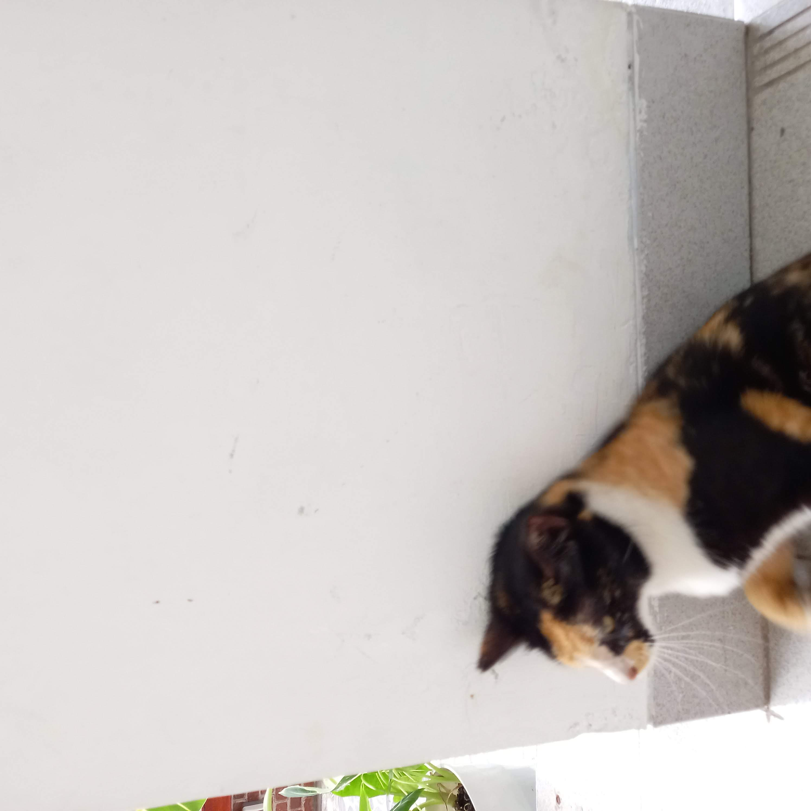
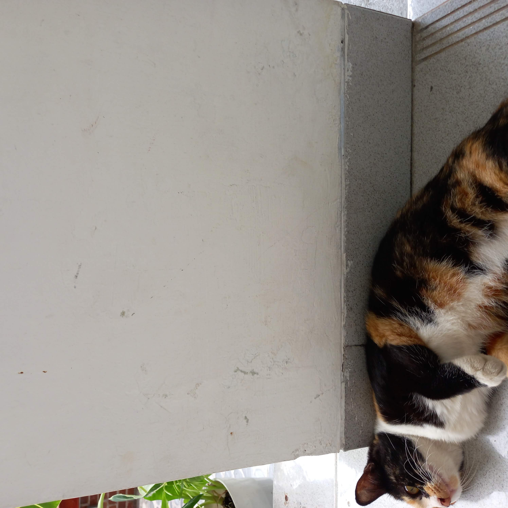
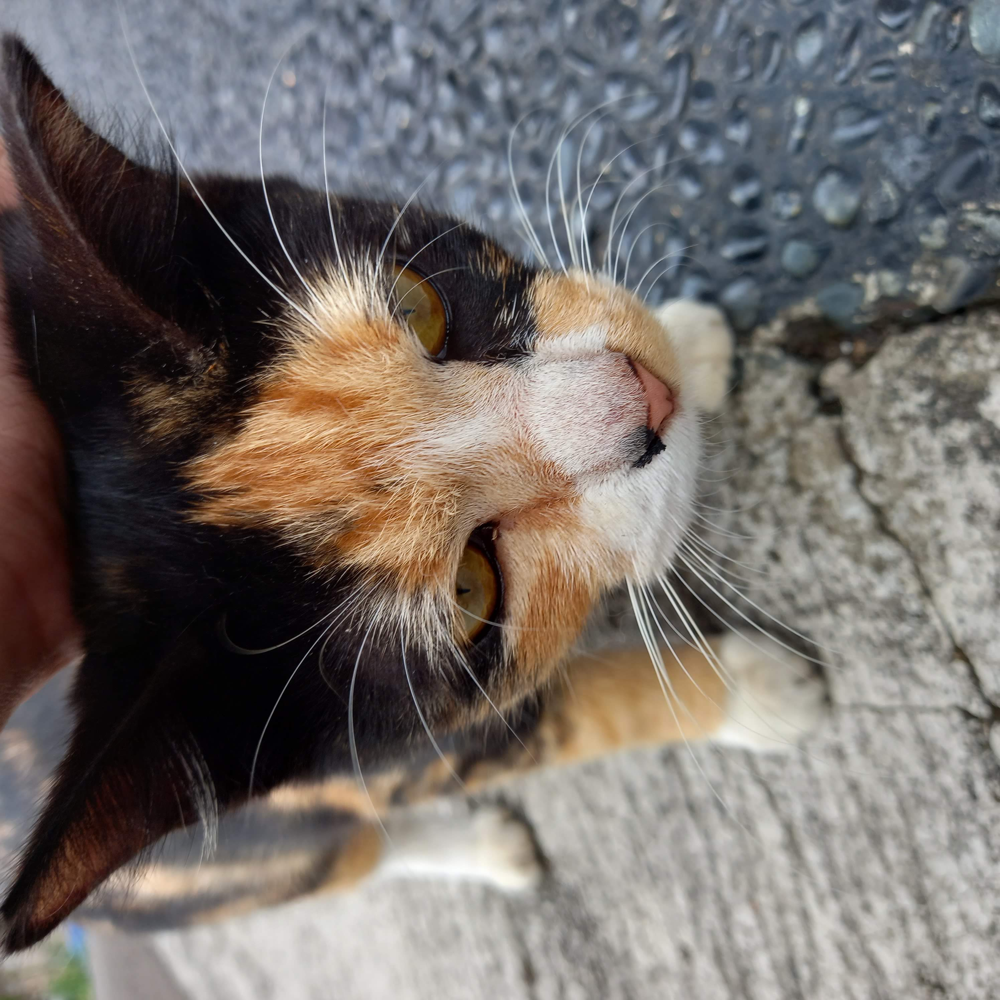

Silvia merupakan salah satu kucing yang berada di kompleks Aryawidura, tapi dia juga peliharaan saya! Kucing ini adalah kucing yang mempunyai 3 warna yaitu hitam kuning dan putih. Kucing ini sering meminta makan kepada saya, biasanya ia meminta ikan atau ayam wings. Dia sekarang dapat membuka pintu rumah saya dengan mudah! Seharusnya dia tidak melakukan hal seperti itu karena orangtua saya melarang kucing untuk masuk rumah karena terkadang Silvia masuk selokan air.
  Open_cat.mid - Silvia's Here Coming For You
Sebuah lagu MIDI yang saya buat yang berjudul: Silvia Datang Untuk Kamu.
Funfact: Silvia sudah menjadi peliharaan kami sejak awal tahun 2025.
Link ke postingan saya
Elvina menghilang tanpa jejak , Elvina si anak kucing tiba-tiba menghilang sejak awal tahun 2026. Tidak ada jejak, dia kemana ya? Sepertinya ke jalan yang jauh.
Saya suka bersepeda keliling , Sepeda itu menyehatkan, jadi kemanapun saya akan memakai sepeda. Sepeda sangat cepat juga dan efektif.
Viricossa makan di pagi hari sendirian , Si Viricossa kucing kami memakan ikan Cue sendirian di pagi hari saat hujan. Tidak ada teman.
Bottleflip botol berhasil dari 2 meter! , Teman saya dan saya melihat bahwa botol itu berhasil berdiri dari jarak sejauh 2 meter. Ini sangatlah gila!
Silvia melompat kaget tanpa ada suara , Silvia tiba-tiba melompat saat tidak ada suara yang bisa saya dengar. Mengapa ini terjadi?
Silvia dan Viricossa tidur bersama dengan lucu , Silvia dan Viricossa sedang tidur bersama, dan pada saat itu kakak saya menangkap gambar ini! Sangat lucu sekali!
Hak Cipta © 2026 AimarWebProject. Dibuat oleh Aimar R.D.